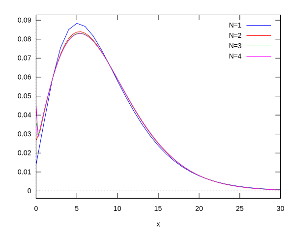
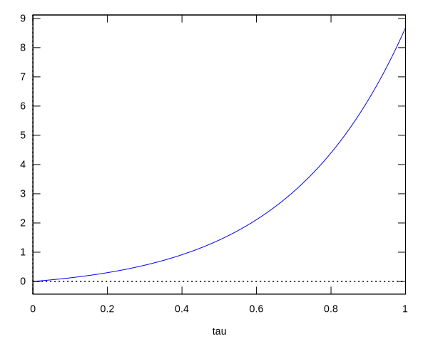

This page was generated from
source/diffusion-approximation/genfunc-bid-diffapprox.ipynb.
 or
or
Generating function analysis of the diffusion approximation to the birth-immigration-death process¶
Updated solution check for the diffusion approximation¶
Check the solution to the characteristic equation.¶
[1]:
chartu: logcontract(integrate(1/(-D * theta^2 + s * theta), theta));
[1]:
\[\tag{${\it \%o}_{1}$}\frac{\log \left(\frac{\vartheta}{D\,\vartheta-s}\right)}{s}\]
[2]:
chartsolu: logcontract(chartu - subst(theta[0], theta, chartu));
[2]:
\[\tag{${\it \%o}_{2}$}\frac{\log \left(-\frac{\left(s-\vartheta_{0}\,D\right)\,\vartheta}{\vartheta_{0}\,\left(D\,\vartheta-s\right)}\right)}{s}\]
[3]:
chartsoltheta: solve([chartsolu=u], theta);
[3]:
\[\tag{${\it \%o}_{3}$}\left[ \vartheta=\frac{\vartheta_{0}\,s\,e^{s\,u}}{\vartheta_{0}\,D\,e^{s\,u}+s-\vartheta_{0}\,D} \right] \]
\label{eq:diffapprox-theta-char}
[7]:
chartheta : s * theta[0] / (D * (1 - %e^(-s*u)) * theta[0] + s * %e^(-s * u));
[7]:
\[\tag{${\it \%o}_{7}$}\frac{\vartheta_{0}\,s}{s\,e^ {- s\,u }+\vartheta_{0}\,D\,\left(1-e^ {- s\,u }\right)}\]
[8]:
solve(chartheta=theta,theta[0]);
[8]:
\[\tag{${\it \%o}_{8}$}\left[ \vartheta_{0}=-\frac{s\,\vartheta}{\left(D\,\vartheta-s\right)\,e^{s\,u}-D\,\vartheta} \right] \]
[9]:
subst(0, u, chartheta);
[9]:
\[\tag{${\it \%o}_{9}$}\vartheta_{0}\]
[10]:
chareqn(theta) := diff(theta, u) + D * theta^2 - s * theta;
[10]:
\[\tag{${\it \%o}_{10}$}{\it chareqn}\left(\vartheta\right):={\it diff}\left(\vartheta , u\right)+D\,\vartheta^2+\left(-s\right)\,\vartheta\]
[11]:
chareqn(theta(u));
[11]:
\[\tag{${\it \%o}_{11}$}\frac{d}{d\,u}\,\vartheta\left(u\right)+D\,\vartheta\left(u\right)^2-s\,\vartheta\left(u\right)\]
[12]:
factor(chareqn(chartheta));
[12]:
\[\tag{${\it \%o}_{12}$}0\]
Check the solution for the cumulant generating function.¶
[13]:
cgfsol : s * %e^(s * tau) * theta/ (D* (%e^(s * tau) - 1) * theta+ s);
[13]:
\[\tag{${\it \%o}_{13}$}\frac{s\,e^{s\,\tau}\,\vartheta}{D\,\left(e^{s\,\tau}-1\right)\,\vartheta+s}\]
[14]:
gfeqn (gam) := diff(gam, tau) + theta * (D*theta - s) * diff(gam, theta);
[14]:
\[\tag{${\it \%o}_{14}$}{\it gfeqn}\left({\it gam}\right):={\it diff}\left({\it gam} , \tau\right)+\vartheta\,\left(D\,\vartheta-s\right)\,{\it diff}\left({\it gam} , \vartheta\right)\]
[15]:
gfeqn(Gamma(theta,tau));
[15]:
\[\tag{${\it \%o}_{15}$}\vartheta\,\left(D\,\vartheta-s\right)\,\left(\frac{d}{d\,\vartheta}\,\Gamma\left(\vartheta , \tau\right)\right)+\frac{d}{d\,\tau}\,\Gamma\left(\vartheta , \tau\right)\]
[16]:
factor(gfeqn(cgfsol));
[16]:
\[\tag{${\it \%o}_{16}$}0\]
Find the characteristic which passes through a given point (\(\theta_f\), \(\tau_f\)).¶
[17]:
th0sol : solve([theta[f] = subst(u[f], u, chartheta)], [theta[0]]);
[17]:
\[\tag{${\it \%o}_{17}$}\left[ \vartheta_{0}=\frac{\vartheta_{f}\,s}{\left(s-D\,\vartheta_{f}\right)\,e^{u_{f}\,s}+D\,\vartheta_{f}} \right] \]
[18]:
factor(psubst(th0sol, chartheta));
[18]:
\[\tag{${\it \%o}_{18}$}\frac{\vartheta_{f}\,s\,e^{s\,u}}{D\,\vartheta_{f}\,e^{s\,u}+s\,e^{u_{f}\,s}-D\,\vartheta_{f}\,e^{u_{f}\,s}}\]
[19]:
factor(subst(tau[0]-tau[f], u[f], psubst(th0sol, chartheta)));
[19]:
\[\tag{${\it \%o}_{19}$}\frac{\vartheta_{f}\,s\,e^{s\,u+\tau_{f}\,s}}{D\,\vartheta_{f}\,e^{s\,u+\tau_{f}\,s}+s\,e^{\tau_{0}\,s}-D\,\vartheta_{f}\,e^{\tau_{0}\,s}}\]
[20]:
(theta[f]*s*%e^(uf*s))/
(s*%e^(s*u)-D*theta[f]*%e^(s*u)+D*theta[f]*%e^(uf*s));
[20]:
\[\tag{${\it \%o}_{20}$}\frac{\vartheta_{f}\,s\,e^{s\,{\it uf}}}{D\,\vartheta_{f}\,e^{s\,{\it uf}}+s\,e^{s\,u}-D\,\vartheta_{f}\,e^{s\,u}}\]
Integrate along that characteristic.¶
[21]:
ginhint : integrate((theta[f]*s*%e^(uf*s))/
(s*%e^(s*u)-D*theta[f]*%e^(s*u)+D*theta[f]*%e^(uf*s)), u);
[21]:
\[\tag{${\it \%o}_{21}$}\vartheta_{f}\,s\,e^{s\,{\it uf}}\,\left(\frac{u\,e^ {- s\,{\it uf} }}{D\,\vartheta_{f}}-\frac{e^ {- s\,{\it uf} }\,\log \left(D\,\vartheta_{f}\,e^{s\,{\it uf}}+\left(s-D\,\vartheta_{f}\right)\,e^{s\,u}\right)}{D\,\vartheta_{f}\,s}\right)\]
[24]:
ginhint : integrate((theta[f]*s*%e^(u*s))/
(s*%e^(s*uf)-D*theta[f]*%e^(s*uf)+D*theta[f]*%e^(u*s)), u);
[24]:
\[\tag{${\it \%o}_{24}$}\frac{\log \left(s\,e^{s\,{\it uf}}-D\,\vartheta_{f}\,e^{s\,{\it uf}}+D\,\vartheta_{f}\,e^{s\,u}\right)}{D}\]
Check the resulting inhomogenous solution to the c.g.f. equation.¶
[25]:
logcontract(ev(factor(subst(uf, u, ginhint) - subst(0, u, ginhint)), logexpand=super));
[25]:
\[\tag{${\it \%o}_{25}$}\frac{\log \left(\frac{s}{\left(s-D\,\vartheta_{f}\right)\,e^{s\,{\it uf}}+D\,\vartheta_{f}}\right)+s\,{\it uf}}{D}\]
[26]:
gaminh: M*psubst([theta[f]=theta, uf=tau], logcontract(ev(factor(subst(uf, u, ginhint) - subst(0, u, ginhint)))));
[26]:
\[\tag{${\it \%o}_{26}$}\frac{M\,\log \left(\frac{s\,e^{s\,\tau}}{e^{s\,\tau}\,\left(s-D\,\vartheta\right)+D\,\vartheta}\right)}{D}\]
[28]:
gaminhreform: -(M/D) * log( (D/s) * (%e^(-s * tau) - 1) * theta + 1);
[28]:
\[\tag{${\it \%o}_{27}$}-\frac{M\,\log \left(\frac{D\,\left(e^ {- s\,\tau }-1\right)\,\vartheta}{s}+1\right)}{D}\]
[34]:
logcontract(gaminh - gaminhreform);
[34]:
\[\tag{${\it \%o}_{33}$}0\]
[35]:
gaminh : -(M/D) * log( (D/s) * (%e^(s * tau) - 1) * theta + 1);
[35]:
\[\tag{${\it \%o}_{34}$}-\frac{M\,\log \left(\frac{D\,\left(e^{s\,\tau}-1\right)\,\vartheta}{s}+1\right)}{D}\]
[37]:
factor(gfeqn(gaminh));
[37]:
\[\tag{${\it \%o}_{36}$}-M\,\vartheta\]
[38]:
factor(gfeqn(gaminh));
[38]:
\[\tag{${\it \%o}_{37}$}-M\,\vartheta\]
[39]:
mgfinh : ( (D/s) * (%e^(s * tau) - 1) * theta + 1)^(-M/D);
[39]:
\[\tag{${\it \%o}_{38}$}\frac{1}{\left(\frac{D\,\left(e^{s\,\tau}-1\right)\,\vartheta}{s}+1\right)^{\frac{M}{D}}}\]
[40]:
factor(gfeqn(mgfinh) + M * theta * mgfinh);
[40]:
\[\tag{${\it \%o}_{39}$}0\]
Check the old solution for the probability density.¶
[18]:
difeqn(rho(x,tau));
[18]:
\[\tag{${\it \%o}_{18}$}{\it difeqn}\left(\rho\left(x , \tau\right)\right)\]
[7]:
difeqn (rho) := D * diff(x * rho, x, 2) - s * diff(x * rho, x)
- M * diff(rho, x) - diff(rho, tau);
[7]:
\[\tag{${\it \%o}_{7}$}{\it difeqn}\left(\rho\right):=D\,{\it diff}\left(x\,\rho , x , 2\right)-s\,{\it diff}\left(x\,\rho , x\right)+\left(-M\right)\,{\it diff}\left(\rho , x\right)-{\it diff}\left(\rho , \tau\right)\]
[6]:
difeqn(rho(x,tau));
[6]:
\[\tag{${\it \%o}_{6}$}D\,\left(x\,\left(\frac{d^2}{d\,x^2}\,\rho\left(x , \tau\right)\right)+2\,\left(\frac{d}{d\,x}\,\rho\left(x , \tau\right)\right)\right)-s\,\left(x\,\left(\frac{d}{d\,x}\,\rho\left(x , \tau\right)\right)+\rho\left(x , \tau\right)\right)-M\,\left(\frac{d}{d\,x}\,\rho\left(x , \tau\right)\right)-\frac{d}{d\,\tau}\,\rho\left(x , \tau\right)\]
[8]:
goodrho : %e^((s*x/D) / (1 - %e^(s*tau))) *
(%e^(s*tau) - 1)^(-M/D) * x^(M/D - 1);
[8]:
\[\tag{${\it \%o}_{8}$}\frac{x^{\frac{M}{D}-1}\,e^{\frac{s\,x}{D\,\left(1-e^{s\,\tau}\right)}}}{\left(e^{s\,\tau}-1\right)^{\frac{M}{D}}}\]
[10]:
oldrho : %e^(-(s * x * %e^(-s * tau) / D) / (1 - %e^(-s * tau))) *
%e^(-s * tau) * (1 - %e^(-s * tau))^(M/D - 2);
[10]:
\[\tag{${\it \%o}_{10}$}\left(1-e^ {- s\,\tau }\right)^{\frac{M}{D}-2}\,e^{-\frac{s\,e^ {- s\,\tau }\,x}{D\,\left(1-e^ {- s\,\tau }\right)}-s\,\tau}\]
[12]:
oldrho : %e^(-(s * x * %e^(-s * tau) / D) / (1 - %e^(-s * tau))) *
%e^(-s * tau) * (1 - %e^(-s * tau))^(M/D - 2);
[12]:
\[\tag{${\it \%o}_{12}$}\left(1-e^ {- s\,\tau }\right)^{\frac{M}{D}-2}\,e^{-\frac{s\,e^ {- s\,\tau }\,x}{D\,\left(1-e^ {- s\,\tau }\right)}-s\,\tau}\]
[13]:
newrho : %e^((s*x/D) / (1 - %e^(-s*tau))) *
(%e^(-s*tau) - 1)^(M/D) * x^(-1 - M/D);
[13]:
\[\tag{${\it \%o}_{13}$}\left(e^ {- s\,\tau }-1\right)^{\frac{M}{D}}\,x^{-\frac{M}{D}-1}\,e^{\frac{s\,x}{D\,\left(1-e^ {- s\,\tau }\right)}}\]
[14]:
factor(difeqn(newrho));
[14]:
\[\tag{${\it \%o}_{14}$}\frac{2\,\left(1-e^{s\,\tau}\right)^{\frac{M}{D}}\,x^{-\frac{M}{D}-2}\,\left(s^2\,e^{s\,\tau}\,x^2-M\,s\,e^{2\,s\,\tau}\,x+M\,s\,x+M^2\,e^{2\,s\,\tau}+D\,M\,e^{2\,s\,\tau}-2\,M^2\,e^{s\,\tau}-2\,D\,M\,e^{s\,\tau}+M^2+D\,M\right)\,e^{\frac{s\,e^{s\,\tau}\,x}{D\,e^{s\,\tau}-D}-\frac{M\,s\,\tau}{D}}}{D\,\left(e^{s\,\tau}-1\right)^2}\]
[11]:
factor(difeqn(oldrho));
[11]:
\[\tag{${\it \%o}_{11}$}0\]
[20]:
oldrho : %e^(-(s * x * %e^(-s * tau) / D) / (1 - %e^(-s * tau))) *
%e^(-s * tau) * (1 - %e^(-s * tau))^(M/D - 2);
[20]:
\[\tag{${\it \%o}_{20}$}\left(1-e^ {- s\,\tau }\right)^{\frac{M}{D}-2}\,e^{-\frac{s\,e^ {- s\,\tau }\,x}{D\,\left(1-e^ {- s\,\tau }\right)}-s\,\tau}\]
[21]:
factor(difeqn(oldrho));
[21]:
\[\tag{${\it \%o}_{21}$}0\]
[9]:
factor(difeqn(goodrho));
[9]:
\[\tag{${\it \%o}_{9}$}0\]
Homogeneous inverse Laplace transform¶
[65]:
expand(subst(c * thp - 1/b,
theta, x * theta + a * theta / (b * theta + 1)));
[65]:
\[\tag{${\it \%o}_{58}$}c\,{\it thp}\,x-\frac{x}{b}-\frac{a}{b^2\,c\,{\it thp}}+\frac{a}{b}\]
[66]:
expand(subst((a^(1/2) * x^(-1/2) * thp - 1)/b, theta,
x * theta + a * theta / (b * theta + 1)));
[66]:
\[\tag{${\it \%o}_{59}$}-\frac{x}{b}+\frac{\sqrt{a}\,{\it thp}\,\sqrt{x}}{b}-\frac{\sqrt{a}\,\sqrt{x}}{b\,{\it thp}}+\frac{a}{b}\]
[67]:
factor(psubst([a = x0 * %e^(-s*tau),
b = (D/2) * (%e^(-s*tau)- 1)],
a/b - x/b));
[67]:
\[\tag{${\it \%o}_{60}$}-\frac{2\,\left(x_{0}-e^{s\,\tau}\,x\right)}{D\,\left(e^{s\,\tau}-1\right)}\]
[68]:
factor(psubst([a = x0 * %e^(-s*tau),
b = (D/2) * (%e^(-s*tau)- 1)],
(sqrt(a)*sqrt(x))/b));
[68]:
\[\tag{${\it \%o}_{61}$}-\frac{2\,e^{\frac{s\,\tau}{2}}\,\sqrt{x}\,\sqrt{x_{0}}}{D\,\left(e^{s\,\tau}-1\right)}\]
Inhomogeneous inverse Laplace transfom¶
Trying to solve for the probability density.
[22]:
inhdistpart2: factor(subst(tp/x + (s/D)/(1 - %e^(-s*tau)), theta, mgfinh));
[22]:
\[\tag{${\it \%o}_{22}$}e^ {- \frac{M\,s\,\tau}{D} }\,\left(-\frac{D\,\left(e^{s\,\tau}-1\right)\,{\it tp}}{s\,x}\right)^{\frac{M}{D}}\]
[23]:
inhdistpart1: expand(subst(tp/x + (s/D)/(1 - %e^(-s*tau)), theta, x*theta));
[23]:
\[\tag{${\it \%o}_{23}$}\frac{s\,x}{D-D\,e^ {- s\,\tau }}+{\it tp}\]
[24]:
inhdist: 1/x*%e^(inhdistpart1)*inhdistpart2;
[24]:
\[\tag{${\it \%o}_{24}$}\frac{\left(-\frac{D\,\left(e^{s\,\tau}-1\right)\,{\it tp}}{s\,x}\right)^{\frac{M}{D}}\,e^{\frac{s\,x}{D-D\,e^ {- s\,\tau }}+{\it tp}-\frac{M\,s\,\tau}{D}}}{x}\]
[25]:
newrho : %e^((s*x/D) / (1 - %e^(-s*tau))) *
(%e^(-s*tau) - 1)^(M/D) * x^(-1 - M/D);
[25]:
\[\tag{${\it \%o}_{25}$}\left(e^ {- s\,\tau }-1\right)^{\frac{M}{D}}\,x^{-\frac{M}{D}-1}\,e^{\frac{s\,x}{D\,\left(1-e^ {- s\,\tau }\right)}}\]
[26]:
neweqn (rho) := -D * diff(x * rho, x, 2) + s * diff(x * rho, x)
- M * diff(rho, x) - diff(rho, tau);
[26]:
\[\tag{${\it \%o}_{26}$}{\it neweqn}\left(\rho\right):=\left(-D\right)\,{\it diff}\left(x\,\rho , x , 2\right)+s\,{\it diff}\left(x\,\rho , x\right)+\left(-M\right)\,{\it diff}\left(\rho , x\right)-{\it diff}\left(\rho , \tau\right)\]
[27]:
neweqn(rho(x,tau));
[27]:
\[\tag{${\it \%o}_{27}$}-D\,\left(x\,\left(\frac{d^2}{d\,x^2}\,\rho\left(x , \tau\right)\right)+2\,\left(\frac{d}{d\,x}\,\rho\left(x , \tau\right)\right)\right)+s\,\left(x\,\left(\frac{d}{d\,x}\,\rho\left(x , \tau\right)\right)+\rho\left(x , \tau\right)\right)-M\,\left(\frac{d}{d\,x}\,\rho\left(x , \tau\right)\right)-\frac{d}{d\,\tau}\,\rho\left(x , \tau\right)\]
[28]:
factor(neweqn(newrho));
[28]:
\[\tag{${\it \%o}_{28}$}0\]
[29]:
factor(difeqn(newrho));
[29]:
\[\tag{${\it \%o}_{29}$}\frac{2\,\left(1-e^{s\,\tau}\right)^{\frac{M}{D}}\,x^{-\frac{M}{D}-2}\,\left(s^2\,e^{s\,\tau}\,x^2-M\,s\,e^{2\,s\,\tau}\,x+M\,s\,x+M^2\,e^{2\,s\,\tau}+D\,M\,e^{2\,s\,\tau}-2\,M^2\,e^{s\,\tau}-2\,D\,M\,e^{s\,\tau}+M^2+D\,M\right)\,e^{\frac{s\,e^{s\,\tau}\,x}{D\,e^{s\,\tau}-D}-\frac{M\,s\,\tau}{D}}}{D\,\left(e^{s\,\tau}-1\right)^2}\]
Moment generating function¶
[1]:
genfunc (x, t, n0, kb, kd) :=
((kd * %e^(- (kb - kd) * t) - kd +
(kd - kb * %e^(- (kb - kd) * t)) * x) /
(kd * %e^(- (kb - kd) * t) - kb +
(kb - kb * %e^(- (kb - kd) * t)) * x))^n0;
[1]:
\[\tag{${\it \%o}_{1}$}{\it genfunc}\left(x , t , n_{0} , {\it kb} , {\it kd}\right):=\left(\frac{{\it kd}\,e^{\left(-\left({\it kb}-{\it kd}\right)\right)\,t}-{\it kd}+\left({\it kd}-{\it kb}\,e^{\left(-\left({\it kb}-{\it kd}\right)\right)\,t}\right)\,x}{{\it kd}\,e^{\left(-\left({\it kb}-{\it kd}\right)\right)\,t}-{\it kb}+\left({\it kb}-{\it kb}\,e^{\left(-\left({\it kb}-{\it kd}\right)\right)\,t}\right)\,x}\right)^{n_{0}}\]
Extract the probability distribution
[2]:
probdist (m, t, n0, kb, kd) :=
block([gf],
gf : genfunc(z, t, n0, kb, kd),
makelist([j, subst (0, z, diff(gf, z, j) / (j!))],
j, 0, m))$
Reparameterize it according to the diffusion approximation.
[3]:
factor(genfunc(z / N, N * tau, N * x0, D + s/(2*N), D - s/(2*N)));
[3]:
\[\tag{${\it \%o}_{3}$}\left(-\frac{\left(\left(s-2\,D\,N\right)\,e^{s\,\tau}+s+2\,D\,N\right)\,z+\left(2\,D\,N^2-N\,s\right)\,e^{s\,\tau}+N\,s-2\,D\,N^2}{\left(\left(s+2\,D\,N\right)\,e^{s\,\tau}-s-2\,D\,N\right)\,z+\left(-N\,s-2\,D\,N^2\right)\,e^{s\,\tau}-N\,s+2\,D\,N^2}\right)^{N\,x_{0}}\]
[4]:
renoprob (m, N, tau, x0, D, s) :=
map (lambda ([pa], [pa[1] / N, pa[2] * N]),
probdist (m, N * tau, N * x0, D + s/(2*N), D - s/(2*N)))$
Plot with values \(\tau = 1.0, x_0 = 3.0, D = 1.0, s = 1.0\)
[5]:
set_plot_option([svg_file, "maxplot.svg"])$
[6]:
plot2d([[discrete, renoprob(30, 1, 1.0, 3, 1.0, 1.0)],
[discrete, renoprob(60, 2, 1.0, 3, 1.0, 1.0)],
[discrete, renoprob(90, 3, 1.0, 3, 1.0, 1.0)],
[discrete, renoprob(120, 4, 1.0, 3, 1.0, 1.0)]],
[legend, "N=1", "N=2", "N=3", "N=4"],
[xlabel, "x"]);

[6]:
\[\tag{${\it \%o}_{6}$}\left[ \mbox{ /tmp/maxout241.gnuplot } , \mbox{ /tmp/maxplot.svg } \right] \]
Check that it is normalized and extract fixation probability.
[7]:
genfunc(0, t, n0, kb, kd);
factor(genfunc(0, N * tau, N * x0, D + s/(2*N), D - s/(2*N)));
genfunc(1, t, n0, kb, kd);
[7]:
\[\tag{${\it \%o}_{7}$}\left(\frac{{\it kd}\,e^{\left({\it kd}-{\it kb}\right)\,t}-{\it kd}}{{\it kd}\,e^{\left({\it kd}-{\it kb}\right)\,t}-{\it kb}}\right)^{n_{0}}\]
[7]:
\[\tag{${\it \%o}_{8}$}\left(-\frac{\left(s-2\,D\,N\right)\,\left(e^{s\,\tau}-1\right)}{\left(s+2\,D\,N\right)\,e^{s\,\tau}+s-2\,D\,N}\right)^{N\,x_{0}}\]
[7]:
\[\tag{${\it \%o}_{9}$}1\]
Functions to compute moments¶
[8]:
numop(n, gf) :=
if n=0 then gf
else numop(n-1, z * diff(gf, z))$
mom(m, t, n0, kb, kd) :=
factor(subst(1, z, numop(m, genfunc(z, t, n0, kb, kd))))$
momren(m, t, n0, kb, kd) :=
factor(psubst([t = N * tau,
n0 = N * x0,
kb = D + s/(2*N),
kd = D - s/(2*N)],
mom(m, t, n0, kb, kd) / N^m))$
cumu(m, t, n0, kb, kd) :=
factor(subst(1, z, numop(m,
log(genfunc(z, t, n0, kb, kd)))))$
cumuren(m, zt, n0, kb, kd) :=
factor(psubst([t = N * tau,
n0 = N * x0,
kb = D + s/(2*N),
kd = D - s/(2*N)],
cumu(m, t, n0, kb, kd) / N^m))$
Compute cumulants¶
[10]:
cumu(1, t, n0, kb, kd);
cumu(2, t, n0, kb, kd);
cumu(3, t, n0, kb, kd);
cumu(4, t, n0, kb, kd);
[10]:
\[\tag{${\it \%o}_{19}$}n_{0}\,e^{{\it kb}\,t-{\it kd}\,t}\]
[10]:
\[\tag{${\it \%o}_{20}$}\frac{\left({\it kd}+{\it kb}\right)\,n_{0}\,\left(e^{{\it kd}\,t}-e^{{\it kb}\,t}\right)\,e^{{\it kb}\,t-2\,{\it kd}\,t}}{{\it kd}-{\it kb}}\]
[10]:
\[\tag{${\it \%o}_{21}$}\frac{n_{0}\,\left(e^{{\it kd}\,t}-e^{{\it kb}\,t}\right)\,\left({\it kd}^2\,e^{{\it kd}\,t}+4\,{\it kb}\,{\it kd}\,e^{{\it kd}\,t}+{\it kb}^2\,e^{{\it kd}\,t}-2\,{\it kd}^2\,e^{{\it kb}\,t}-2\,{\it kb}\,{\it kd}\,e^{{\it kb}\,t}-2\,{\it kb}^2\,e^{{\it kb}\,t}\right)\,e^{{\it kb}\,t-3\,{\it kd}\,t}}{\left({\it kd}-{\it kb}\right)^2}\]
[10]:
\[\tag{${\it \%o}_{22}$}\frac{\left({\it kd}+{\it kb}\right)\,n_{0}\,\left(e^{{\it kd}\,t}-e^{{\it kb}\,t}\right)\,e^{{\it kb}\,t-4\,{\it kd}\,t}\,\left(-6\,{\it kd}^2\,e^{{\it kd}\,t+{\it kb}\,t}-12\,{\it kb}\,{\it kd}\,e^{{\it kd}\,t+{\it kb}\,t}-6\,{\it kb}^2\,e^{{\it kd}\,t+{\it kb}\,t}+{\it kd}^2\,e^{2\,{\it kd}\,t}+10\,{\it kb}\,{\it kd}\,e^{2\,{\it kd}\,t}+{\it kb}^2\,e^{2\,{\it kd}\,t}+6\,{\it kd}^2\,e^{2\,{\it kb}\,t}+6\,{\it kb}^2\,e^{2\,{\it kb}\,t}\right)}{\left({\it kd}-{\it kb}\right)^3}\]
Reparameterize cumulants and collect powers of \(N\).
[11]:
cumuren(1, t, n0, kb, kd);
cumuren(2, t, n0, kb, kd);
[11]:
\[\tag{${\it \%o}_{23}$}e^{s\,\tau}\,x_{0}\]
[11]:
\[\tag{${\it \%o}_{24}$}\frac{2\,D\,\left(e^{s\,\tau}-1\right)\,e^{s\,\tau}\,x_{0}}{s}\]
[12]:
block([mo],
mo : expand(cumuren(3, t, n0, kb, kd)),
factor(coeff (mo, N, 0)) +
factor(coeff (mo, N, -2)) / N^2);
block([mo],
mo : expand(cumuren(4, t, n0, kb, kd)),
factor(coeff (mo, N, 0)) +
factor(coeff (mo, N, -2)) / N^2);
[12]:
\[\tag{${\it \%o}_{25}$}\frac{\left(e^{s\,\tau}-1\right)\,e^{s\,\tau}\,\left(e^{s\,\tau}+1\right)\,x_{0}}{2\,N^2}+\frac{6\,D^2\,\left(e^{s\,\tau}-1\right)^2\,e^{s\,\tau}\,x_{0}}{s^2}\]
[12]:
\[\tag{${\it \%o}_{26}$}\frac{2\,D\,\left(e^{s\,\tau}-1\right)\,e^{s\,\tau}\,\left(3\,e^{2\,s\,\tau}-2\right)\,x_{0}}{N^2\,s}+\frac{24\,D^3\,\left(e^{s\,\tau}-1\right)^3\,e^{s\,\tau}\,x_{0}}{s^3}\]
[13]:
plot2d(
subst(1.0, s,
(%e^(s*tau)-1)*%e^(s*tau)*(%e^(s*tau)+1)/2),
[tau, 0, 1]);

[13]:
\[\tag{${\it \%o}_{27}$}\left[ \mbox{ /tmp/maxout201.gnuplot } , \mbox{ /tmp/maxplot.svg } \right] \]
/* [wxMaxima batch file version 1] [ DO NOT EDIT BY HAND! ]*/
/* [ Created with wxMaxima version 18.02.0 ] */
/* [wxMaxima: comment start ]
Moment generating function.
[wxMaxima: comment end ] */
/* [wxMaxima: input start ] */
genfunc (x, t, n0, kb, kd) :=
((kd * %e^(- (kb - kd) * t) - kd +
(kd - kb * %e^(- (kb - kd) * t)) * x) /
(kd * %e^(- (kb - kd) * t) - kb +
(kb - kb * %e^(- (kb - kd) * t)) * x))^n0;
/* [wxMaxima: input end ] */
/* [wxMaxima: comment start ]
Extract the probability distribution.
[wxMaxima: comment end ] */
/* [wxMaxima: input start ] */
probdist (m, t, n0, kb, kd) :=
block([gf],
gf : genfunc(z, t, n0, kb, kd),
makelist([j, subst (0, z, diff(gf, z, j) / (j!))],
j, 0, m))$
/* [wxMaxima: input end ] */
/* [wxMaxima: comment start ]
Reparameterize it according to diffusion approximation.
[wxMaxima: comment end ] */
/* [wxMaxima: input start ] */
factor(genfunc(z / N, N * tau, N * x0, D + s/(2*N), D - s/(2*N)));
/* [wxMaxima: input end ] */
/* [wxMaxima: input start ] */
renoprob (m, N, tau, x0, D, s) :=
map (lambda ([pa], [pa[1] / N, pa[2] * N]),
probdist (m, N * tau, N * x0, D + s/(2*N), D - s/(2*N)))$
/* [wxMaxima: input end ] */
/* [wxMaxima: comment start ]
Plot with values tau = 1.0, x0 = 3.0, D = 1.0, s = 1.0
[wxMaxima: comment end ] */
/* [wxMaxima: input start ] */
wxplot2d([[discrete, renoprob(30, 1, 1.0, 3, 1.0, 1.0)],
[discrete, renoprob(60, 2, 1.0, 3, 1.0, 1.0)],
[discrete, renoprob(90, 3, 1.0, 3, 1.0, 1.0)],
[discrete, renoprob(120, 4, 1.0, 3, 1.0, 1.0)]],
[legend, "N=1", "N=2", "N=3", "N=4"],
[xlabel, "x"]);
/* [wxMaxima: input end ] */
/* [wxMaxima: comment start ]
Check that it is normalized and extract
fixation probability.
[wxMaxima: comment end ] */
/* [wxMaxima: input start ] */
genfunc(0, t, n0, kb, kd);
factor(genfunc(0, N * tau, N * x0, D + s/(2*N), D - s/(2*N)));
genfunc(1, t, n0, kb, kd);
/* [wxMaxima: input end ] */
/* [wxMaxima: comment start ]
Functions to compute moments.
[wxMaxima: comment end ] */
/* [wxMaxima: input start ] */
numop(n, gf) :=
if n=0 then gf
else numop(n-1, z * diff(gf, z))$
mom(m, t, n0, kb, kd) :=
factor(subst(1, z, numop(m, genfunc(z, t, n0, kb, kd))))$
momren(m, t, n0, kb, kd) :=
factor(psubst([t = N * tau,
n0 = N * x0,
kb = D + s/(2*N),
kd = D - s/(2*N)],
mom(m, t, n0, kb, kd) / N^m))$
cumu(m, t, n0, kb, kd) :=
factor(subst(1, z, numop(m,
log(genfunc(z, t, n0, kb, kd)))))$
cumuren(m, zt, n0, kb, kd) :=
factor(psubst([t = N * tau,
n0 = N * x0,
kb = D + s/(2*N),
kd = D - s/(2*N)],
cumu(m, t, n0, kb, kd) / N^m))$
/* [wxMaxima: input end ] */
/* [wxMaxima: comment start ]
Have a look at the cumulants.
[wxMaxima: comment end ] */
/* [wxMaxima: input start ] */
cumu(1, t, n0, kb, kd);
cumu(2, t, n0, kb, kd);
cumu(3, t, n0, kb, kd);
cumu(4, t, n0, kb, kd);
/* [wxMaxima: input end ] */
/* [wxMaxima: comment start ]
Reparameterize the cumulants and collect
powers of N.
[wxMaxima: comment end ] */
/* [wxMaxima: input start ] */
cumuren(1, t, n0, kb, kd);
cumuren(2, t, n0, kb, kd);
/* [wxMaxima: input end ] */
/* [wxMaxima: input start ] */
block([mo],
mo : expand(cumuren(3, t, n0, kb, kd)),
factor(coeff (mo, N, 0)) +
factor(coeff (mo, N, -2)) / N^2);
block([mo],
mo : expand(cumuren(4, t, n0, kb, kd)),
factor(coeff (mo, N, 0)) +
factor(coeff (mo, N, -2)) / N^2);
/* [wxMaxima: input end ] */
/* [wxMaxima: input start ] */
wxplot2d(
subst(1.0, s,
(%e^(s*tau)-1)*%e^(s*tau)*(%e^(s*tau)+1)/2),
[tau, 0, 1]);
/* [wxMaxima: input end ] */
"Created with wxMaxima 18.02.0"$